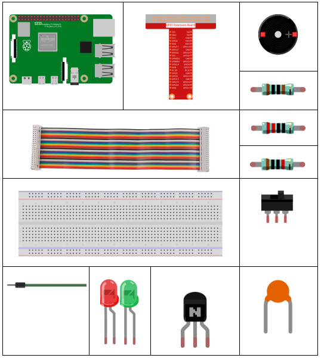
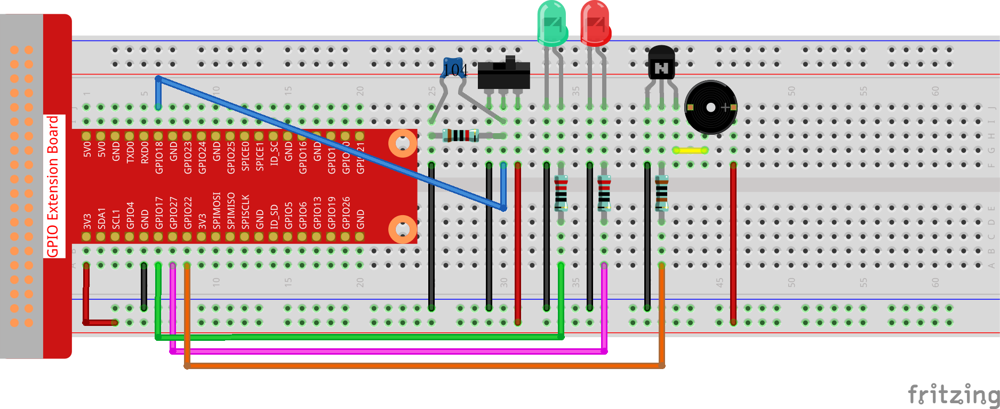

3.1.10 Alarm Bell¶
Introduction¶
In this course, we will make a manual alarm device. You can replace the toggle switch with a thermistor or a photosensitive sensor to make a temperature alarm or a light alarm.
Components¶
Schematic Diagram¶
T-Board Name |
physical |
wiringPi |
BCM |
GPIO17 |
Pin 11 |
0 |
17 |
GPIO18 |
Pin 12 |
1 |
18 |
GPIO27 |
Pin 13 |
2 |
27 |
GPIO22 |
Pin 15 |
3 |
22 |

Experimental Procedures¶
Step 1: Build the circuit.
{kind=link}
For C Language Users¶
Step 2: Change directory.
cd /home/pi/davinci-kit-for-raspberry-pi/c/3.1.10/
Step 3: Compile.
gcc 3.1.10_AlarmBell.c -lwiringPi -lpthread
Step 4: Run.
sudo ./a.out
After the program starts, the toggle switch will be toggled to the right, and the buzzer will give out alarm sounds. At the same time, the red and green LEDs will flash at a certain frequency.
Code Explanation
#include <pthread.h>
In this code, you’ll use a new library, pthread.h, which is a set of common thread libraries and can realize multithreading. We add the -lpthread parameter at compile time for the independent working of the LED and the buzzer.
void *ledWork(void *arg){
while(1)
{
if(flag==0){
pthread_exit(NULL);
}
digitalWrite(ALedPin,HIGH);
delay(500);
digitalWrite(ALedPin,LOW);
digitalWrite(BLedPin,HIGH);
delay(500);
digitalWrite(BLedPin,LOW);
}
}
The function ledWork() helps to set the working state of these 2 LEDs: it keeps the green LED lighting up for 0.5s and then turns off; similarly, keeps the red LED lighting up for 0.5s and then turns off.
void *buzzWork(void *arg){
while(1)
{
if(flag==0){
pthread_exit(NULL);
}
if((note>=800)||(note<=130)){
pitch = -pitch;
}
note=note+pitch;
softToneWrite(BeepPin,note);
delay(10);
}
}
The function buzzWork() is used to set the working state of the buzzer. Here we set the frequency as between 130 and 800, to accumulate or decay at an interval of 20.
void on(){
flag = 1;
if(softToneCreate(BeepPin) == -1){
printf("setup softTone failed !");
return;
}
pthread_t tLed;
pthread_create(&tLed,NULL,ledWork,NULL);
pthread_t tBuzz;
pthread_create(&tBuzz,NULL,buzzWork,NULL);
}
In the function on():
Define the mark “flag=1”, indicating the ending of the control thread.
Create a software-controlled tone pin BeepPin.
Create two separate threads so that the LED and the buzzer can work at the same time.
pthread_t tLed: Declare a thread tLed.
pthread_create(&tLed,NULL,ledWork,NULL)：Create the thread and its prototype is as follows:
int pthread_create(pthread_t *restrict tidp,const pthread_attr_t *restrict_attr,void*（start_rtn)(void),void *restrict arg);
Return the Value
If successful, return “0”；otherwise, return the fall number “-1”.
Parameter
void off(){
flag = 0;
softToneStop(BeepPin);
digitalWrite(ALedPin,LOW);
digitalWrite(BLedPin,LOW);
}
The function Off() defines “flag=0” so as to exit the threads ledWork and BuzzWork and then turn off the buzzer and the LED.
int main(){
setup();
int lastState = 0;
while(1){
int currentState = digitalRead(switchPin);
if ((currentState == 1)&&(lastState==0)){
on();
}
else if((currentState == 0)&&(lastState==1)){
off();
}
lastState=currentState;
}
return 0;
}
Main() contains the whole process of the program: firstly read the value of the slide switch; if the toggle switch is toggled to the right (the reading is 1), the function on() is called, the buzzer is driven to emit sounds and the the red and the green LEDs blink. Otherwise, the buzzer and the LED don’t work.
For Python Language Users¶
Step 2: Change directory.
cd /home/pi/davinci-kit-for-raspberry-pi/python/
Step 3: Run.
sudo python3 3.1.10_AlarmBell.py
After the program starts, the toggle switch will be toggled to the right, and the buzzer will give out alarm sounds. At the same time, the red and green LEDs will flash at a certain frequency.
Code Explanation
import threading
Here, we import the Threading module and it allows you to do multiple things at once, while normal programs can only execute code from top to bottom. With Threading modules, the LED and the buzzer can work separately.
def ledWork():
while flag:
GPIO.output(ALedPin,GPIO.HIGH)
time.sleep(0.5)
GPIO.output(ALedPin,GPIO.LOW)
GPIO.output(BLedPin,GPIO.HIGH)
time.sleep(0.5)
GPIO.output(BLedPin,GPIO.LOW)
The function ledWork() helps to set the working state of these 2 LEDs: it keeps the green LED lighting up for 0.5s and then turns off; similarly, keeps the red LED lighting up for 0.5s and then turns off.
def buzzerWork():
global pitch
global note
while flag:
if note >= 800 or note <=130:
pitch = -pitch
note = note + pitch
Buzz.ChangeFrequency(note)
time.sleep(0.01)
The function buzzWork() is used to set the working state of the buzzer. Here we set the frequency as between 130 and 800, to accumulate or decay at an interval of 20.
def on():
global flag
flag = 1
Buzz.start(50)
tBuzz = threading.Thread(target=buzzerWork)
tBuzz.start()
tLed = threading.Thread(target=ledWork)
tLed.start()
In the function on():
Define the mark “flag=1”, indicating the ending of the control thread.
Start the Buzz, and set the duty cycle to 50%.
Create 2 separate threads so that the LED and the buzzer can work at the same time.
tBuzz = threading.Thread(target=buzzerWork)：Create the thread and its prototype is as follows:
class threading.Thread(group=None, target=None, name=None, args=(), kwargs={}, *, daemon=None)
Among the construction methods, the principal parameter is target, we need to assign a callable object (here are the functions ledWork and BuzzWork) to target.
Next start() is called to start the thread object, ex., tBuzz.start() is used to start the newly installed tBuzz thread.
def off():
global flag
flag = 0
Buzz.stop()
GPIO.output(ALedPin,GPIO.LOW)
GPIO.output(BLedPin,GPIO.LOW)
The function Off() defines “flag=0” so as to exit the threads ledWork and BuzzWork and then turn off the buzzer and the LED.
def main():
lastState=0
while True:
currentState =GPIO.input(switchPin)
if currentState == 1 and lastState == 0:
on()
elif currentState == 0 and lastState == 1:
off()
lastState=currentState
Main() contains the whole process of the program: firstly read the value of the slide switch; if the toggle switch is toggled to the right (the reading is 1), the function on() is called, the buzzer is driven to emit sounds and the the red and the green LEDs blink. Otherwise, the buzzer and the LED don’t work.
Phenomenon Picture¶